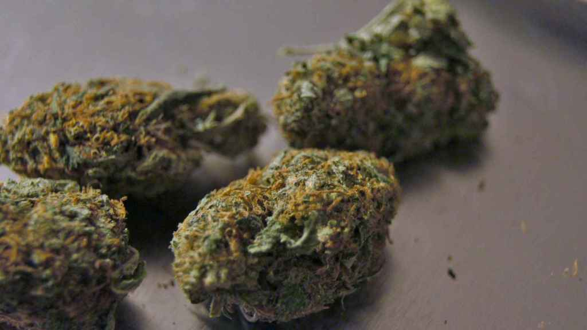
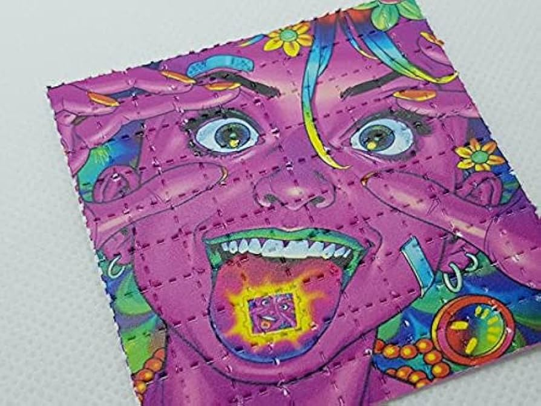
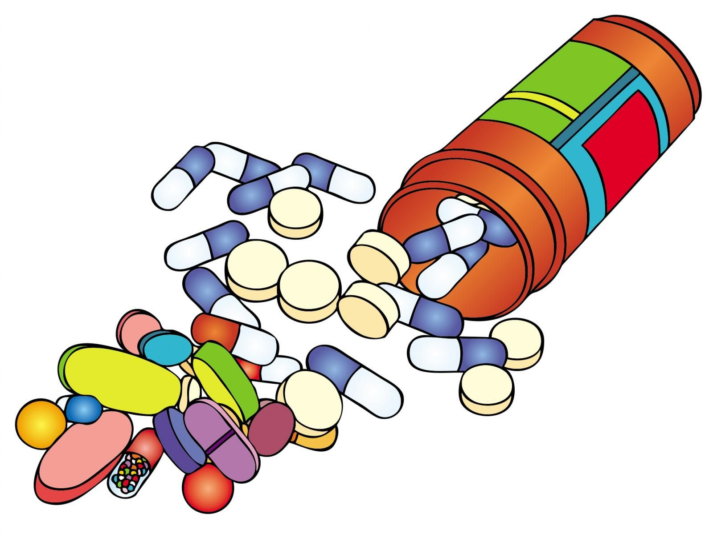

Tipos de consumibles
Necesitas ayuda?
Tipos de consumibles
Necesitas ayuda?
El cannabis es una planta originaria de Asia, conocida por sus propiedades psicoactivas, medicinales y recreativas. Su componente principal, el THC, tiene efectos psicoactivos, mientras que el CBD tiene aplicaciones terapéuticas. El consumo incluye fumar, vaporizar, comer y aceites.

El LSD es una droga psicodélica que altera la percepción y genera experiencias intensas, conocidas como "viajes". Aunque no es adictivo, su consumo debe ser controlado, pues puede causar episodios psicóticos o flashbacks. Se investiga su uso terapéutico para trastornos psicológicos.

Las anfetaminas son estimulantes del sistema nervioso utilizados para tratar TDAH y narcolepsia. Aunque aumentan la energía y concentración, su abuso puede llevar a dependencia, daño cerebral y trastornos cardiovasculares.

El fentanilo, un opioide sintético, es 50 veces más potente que la morfina y se utiliza para tratar dolor intenso. Su abuso es una de las principales causas de sobredosis, siendo letal en pequeñas dosis sin supervisión médica.